- 開兩個視窗：左邊放動畫，右邊放 VS Code。
- 每個小標題旁邊有「▶ 看動畫」，點下去就跳到那一段。看完一段，暫停，照手冊做一次。
- 黑底框裡的指令和 prompt：反白、Ctrl+C 複製，貼上就好，不用照著打。
- 圖太小看不清楚，點一下圖，會開一個新分頁看原圖。
先認得這幾個詞
| Step | 這一章做什麼 |
|---|---|
| Step 0 | 下載教材、跑前置檢查 |
| Step 1 | 看兩個網頁：有規矩、沒規矩，差在哪 |
| Step 2 | 把範本跑起來、當使用者玩一輪、認識四份規矩 |
| Step 3 ★ | 只給白話 PRD → AI 找缺口出選擇題 → 你拍板 → 看文件和圖 → 說「開工」→ 驗收 |
| Step 4 | 貼一個 prompt：AI 自己測、自己修，再叫分身挑錯，最後交報告 |
| Step 5 | 回公司怎麼用 |
- 教材下載到電腦，用 VS Code 打開。
- 前置檢查最後寫「可以開課」。
課前要先裝好：VS Code、Git、Node.js、pnpm，還有 VS Code 裡的 AI 助手 Claude Code（要登入）。沒裝好的，課前找講師。
① 打開終端機
先打開 VS Code：按鍵盤的 Windows 鍵，打 Visual Studio Code，點開。
終端機就是打指令的視窗。VS Code 選單「終端機」→「新增終端」。下面出現 PS 開頭的一行，就是在等你打指令。
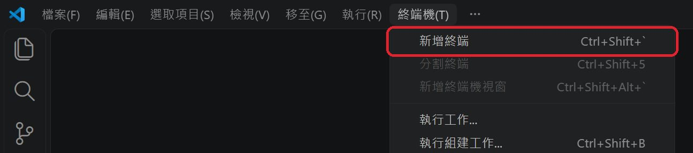
② 下載教材
一行貼一次、按 Enter。沒有 D 槽，就把第一行換成 cd C:\。
cd D:\
git clone https://github.com/xian711/AI_CRUD_Workshop_Frontend_EASY.git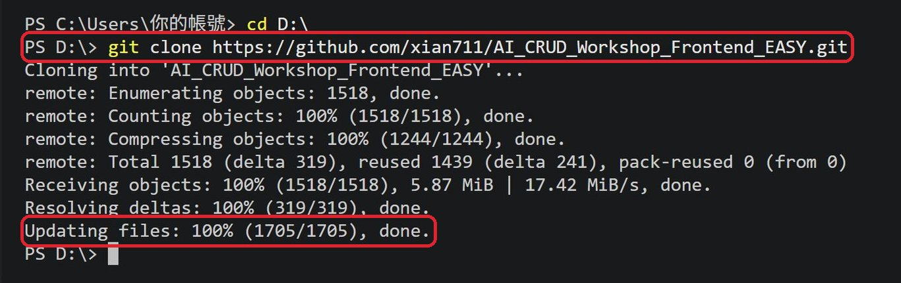
done，就是下載完成。③ 用 VS Code 打開教材資料夾
- 選單「檔案」→「開啟資料夾」，選剛下載的
AI_CRUD_Workshop_Frontend_EASY，按「選取資料夾」。 - 問你信不信任作者，選「是，我信任作者」。
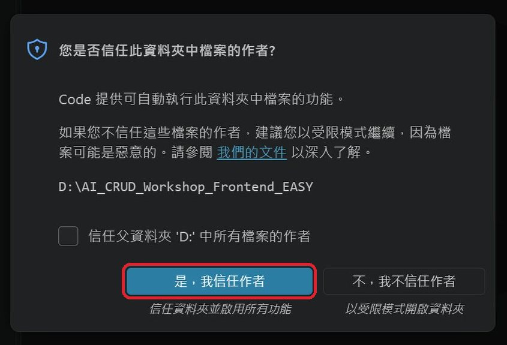
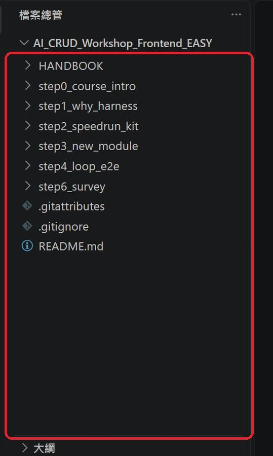
④ 跑前置檢查
再開一個終端機（選單「終端機」→「新增終端」），一行貼一次、按 Enter：
cd step0_course_intro
.\preflight.ps1macOS 的指令
cd step0_course_intro
bash preflight.sh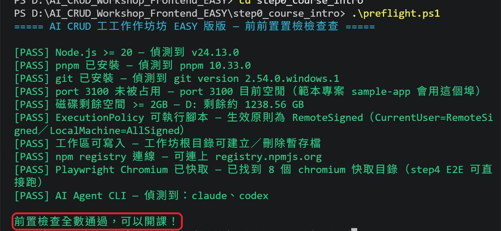
[WARN] 只是提醒，不擋你；只有紅色 [FAIL] 一定要處理。- 一執行就跳「已停用指令碼執行」：先貼這一行，問你要不要變更就打
Y、Enter，再重跑.\preflight.ps1。公司電腦不准改，找 IT 或講師。Set-ExecutionPolicy -Scope CurrentUser RemoteSigned - 看到 [FAIL]：照 FAIL 下一行的修復提示做一次。
- 還是紅：關掉終端機、重開一個再跑。剛裝好的工具，舊視窗抓不到，這是最常見的假紅燈。
- 還是紅：把整段輸出（連 [PASS] 的行）貼給 AI：
這是工作坊前置檢查 preflight.ps1 的完整輸出，我用 Windows 11。 請說明每個 [FAIL] 的原因，給我可複製的修復指令；不要改工作坊的檔案。 （把整份 preflight 輸出貼在這裡）
- 親手點過兩個網頁：同一句需求，一個沒給規矩、一個有給規矩。
- 說得出差別：不在好不好看，在「這個決定是誰做的」。
- 找得到「下拉選單不准預設帶第一個」這條規矩寫在哪。
① 打開兩個網頁 ▶ 看動畫
在終端機一行貼一次（第一行是回到教材資料夾）：
cd ..
start step1_why_harness\demo\no-harness.html
start step1_why_harness\demo\with-harness.htmlmacOS 的指令
cd ..
open step1_why_harness/demo/no-harness.html
open step1_why_harness/demo/with-harness.html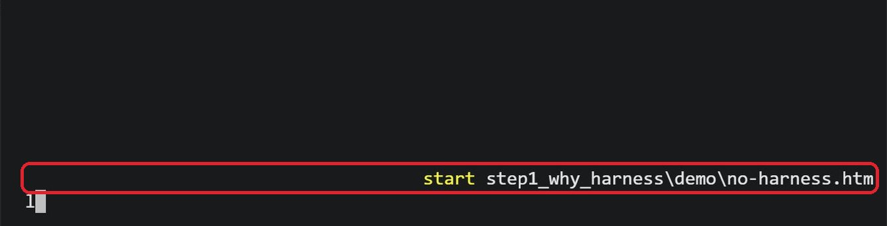
start＝用瀏覽器打開。兩個網頁都很好看，新增、刪除也都能用。② 自己點一點：血型和電話 ▶ 看動畫
- 沒給規矩那版：一打開，血型已經替你選好「A」。不改就送出，存進去的就是錯的血型。
- 有規矩那版：什麼都不填，直接按「新增志工」。姓名、電話、血型都擋下來。
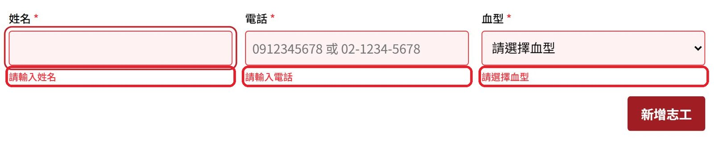
← 手機可左右滑看整張圖 →
- 姓名填「王小明」、血型隨便選一個。電話打
322-1234（市話忘了區碼），按「新增志工」：被擋。改打(02) 1234-5678，再按一次：收進去了，市話也是電話。
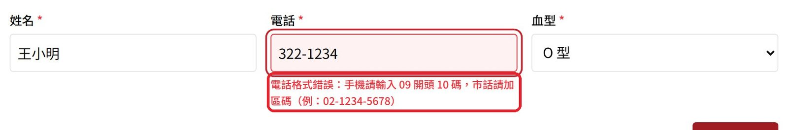
← 手機可左右滑看整張圖 →
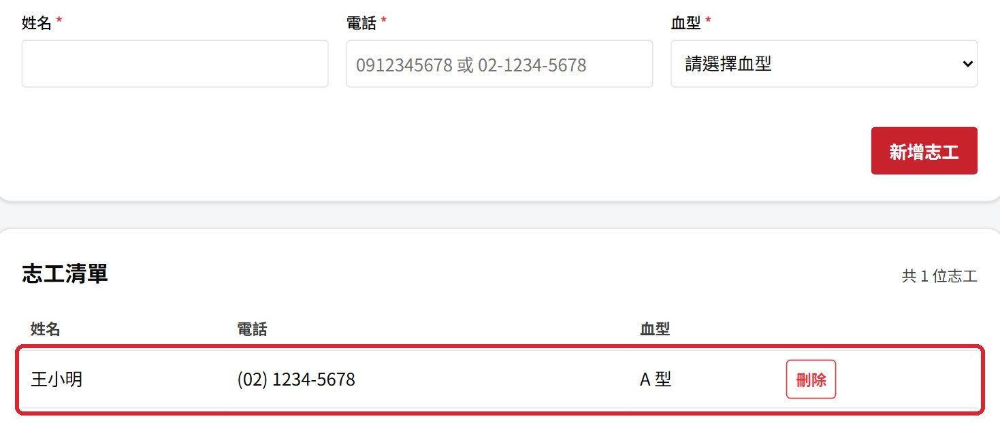
0912345678 也收。| 看哪裡 | 沒給規矩 | 有給規矩 |
|---|---|---|
| 主色 | 橘色，AI 自己挑的 | 品牌紅 #C8232C，規矩指定的 |
| 寫死的顏色 | 5 處 | 0 處（全部用 token） |
| 血型預設值 | 一打開就是「A」 | 「請選擇血型」，沒選就擋 |
| 血型有沒有檢查 | 完全沒檢查 | 沒選就跳紅字 |
電話 322-1234 | 收進去，存了也打不通 | 擋下來，要加區碼 |
| 必填星號 | 沒有 | 4 個必填欄都有 |
想多看：兩版的其他差別（手機版、無障礙、程式行數）
- 兩邊都自己多做了東西（關掉再開資料還在、清單空的時候有提示）：規矩管得住「怎麼寫」，管不住「做多少」。
- 有規矩那版多做了手機版（表格變卡片）和無障礙（螢幕報讀唸得出哪一欄填錯），所以程式行數多一倍（312 行 → 752 行）。
③ 這條規矩寫在哪 ▶ 看動畫
規矩要白紙黑字寫出來，AI 才有出處。「下拉不准預設帶第一個」寫在這三個地方，內容一樣：
- Step 1 有規矩那版的需求：
step1_why_harness/demo/PROMPT.md版本 B【表單互動】。 - Step 2 範本的總綱：
sample-app/CLAUDE.md第 11 條。 - Step 2 範本的細則：
CODE-RULES-ui-本專案.md、design-system-summary.md。
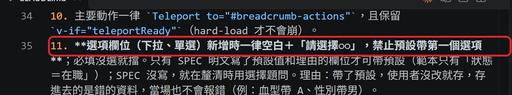
CLAUDE.md 第 11 條：選項欄位新增時一律空白，不准預設帶第一個。- 範本「人員管理」在你的電腦跑起來，五件事都點過：新增、編輯、刪除、篩選、匯出。
- 知道四份規矩放在哪；Step 3 複製範本時，它們會一起帶走。
① 安裝並啟動範本 ▶ 看動畫
先看終端機開頭：要是 …\AI_CRUD_Workshop_Frontend_EASY>。如果最後是 step0_course_intro>，先打 cd ..。然後一行貼一次；等 pnpm install 出現 Done，再貼 pnpm dev：
cd step2_speedrun_kit/2.1_sample_app/sample-app
pnpm install
pnpm dev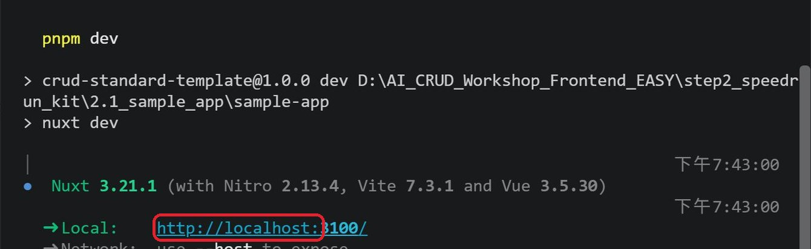
② 當使用者玩一輪 ▶ 看動畫
- 新增：點「新增人員」。性別、證件類別都是空白的「請選擇」——這就是 Step 1 那條規矩。只有「狀態」先帶「在職」，因為規格寫了理由。
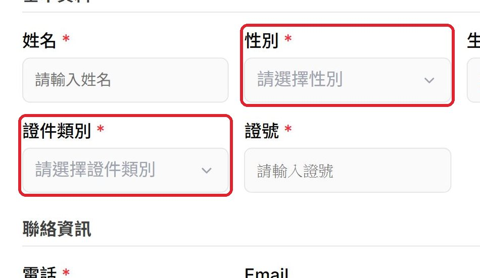
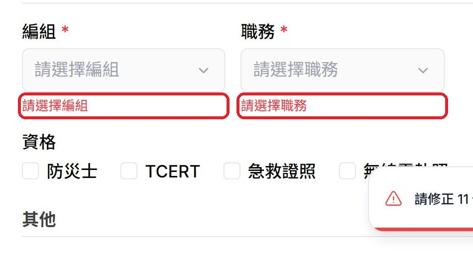
把紅字的欄位都填好、選好，再按儲存：右下角出現「已新增人員」，回到列表，看得到新的那一筆。
- 編輯：點鉛筆圖示，改一下備註，儲存。再試一次：清空姓名按儲存，會跳紅字；試完按「取消」就好。
- 刪除：點垃圾桶，先跳確認框，按紅色「刪除」才刪。
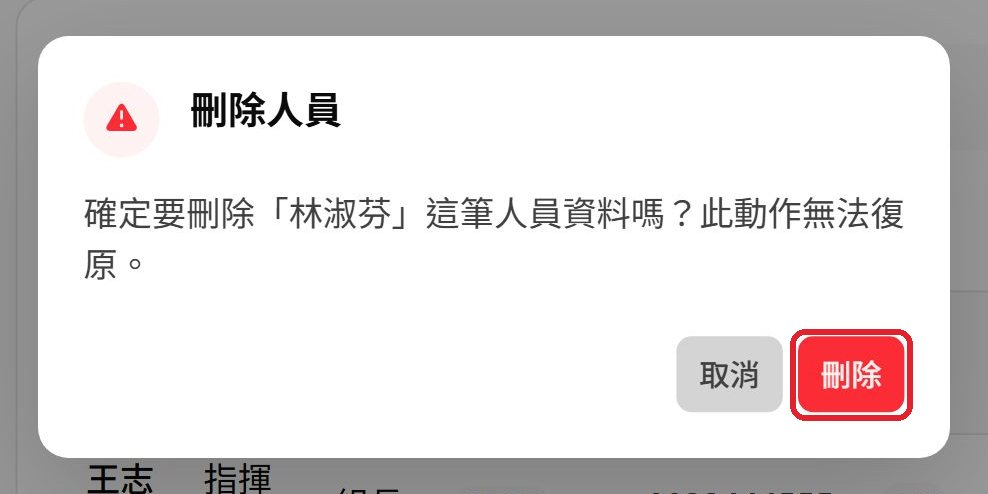
- 篩選：關鍵字打「陳」、狀態選「在職」，清單馬上只剩符合的。把網址複製，貼到同一台電腦的新分頁，條件原樣還原。
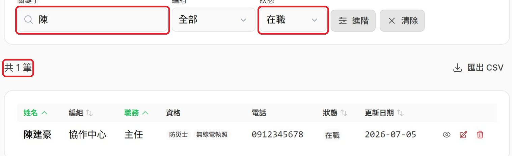
- 匯出：先按「清除」清掉條件，再按「匯出 CSV」：匯出全部 24 筆，不是只有這一頁的 20 筆。有篩選時，只匯出符合條件的全部。
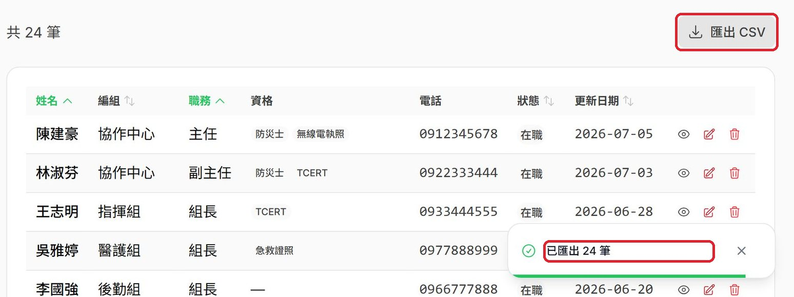
加分：把視窗拉窄到手機寬度，表格會變成一張一張卡片。
③ 範本的 8 個核心檔：複製還是共用 ▶ 看動畫
左邊點開 step2_speedrun_kit/2.1_sample_app/README.md，按 Ctrl+Shift+V 看預覽（不然只看到一堆 # 和 |）。看「8 個核心檔」那張表：
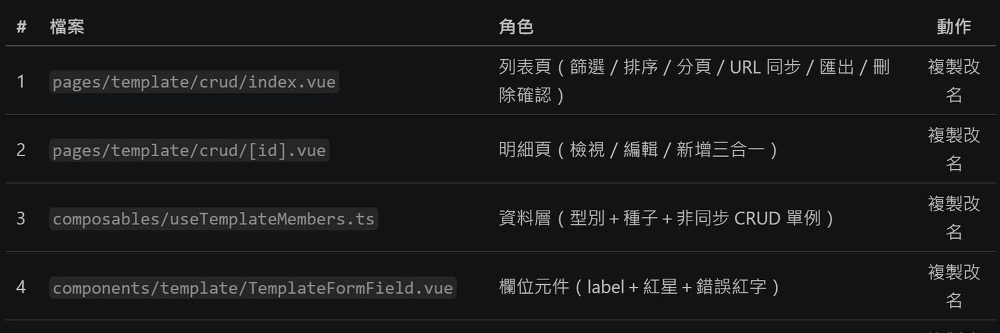
← 手機可左右滑看整張圖 →
| 核心檔 | 做什麼 | 做新模組時 |
|---|---|---|
列表頁 index.vue | 清單、篩選、分頁 | 複製改名 |
明細頁 [id].vue | 新增、檢視、編輯 | 複製改名 |
資料 useTemplateMembers.ts | 這種資料有哪些欄位、示範資料 | 複製改名 |
欄位外框 TemplateFormField.vue | 欄位名稱、紅星、紅字 | 複製改名 |
狀態標籤 TemplateStatusBadge.vue | 狀態的顏色 | 複製改名 |
列表狀態工廠 useTemplateListPage.ts | 篩選、排序、分頁寫進網址 | 直接共用 |
檢查規則 templateValidation.ts | 必填、電話、證號怎麼檢查 | 直接共用 |
CSV 匯出 templateCsv.ts | 匯出、Excel 不亂碼 | 直接共用 |
判斷只有一句：跟「這個資料長什麼樣子」有關的 → 複製改名；通用的機制 → 直接共用。
比喻：開分店。招牌、價目表要換（複製改名）；收銀機、冷氣照用（直接共用）。Step 3 你會看 AI 有沒有照這樣做。
④ 四份規矩放在哪 ▶ 看動畫
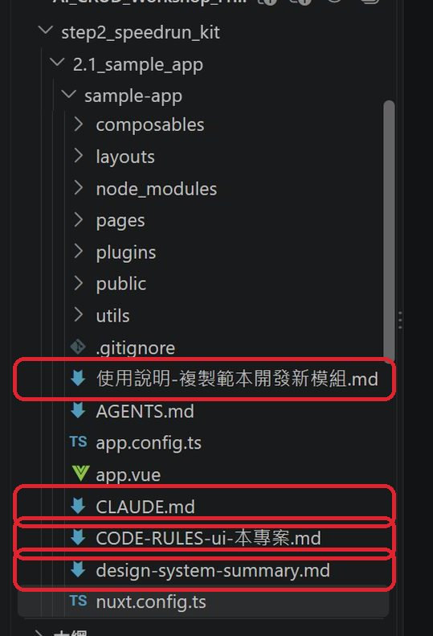
sample-app 最上層這四份 .md 就是規矩（harness）。CLAUDE.md：總綱。用什麼技術、哪些檔不能動，還有 11 條程式規則。你至少要掃過一次，只有 49 行。CODE-RULES-ui-本專案.md：細則。design-system-summary.md：顏色和間距怎麼用。使用說明-複製範本開發新模組.md：怎麼複製範本開新模組。
你不用逐條讀懂，那是寫給 AI 讀的。你要知道兩件事：
- 放在哪：AI 會自己讀；不會自己讀的，Step 3 的起手 prompt 會叫它讀。你不用做任何設定。
- 跟著鍋子走：Step 3 複製範本時，四份一起帶過去。複製後，範本和你的新專案各有一套，不會自動同步；要改你新專案的規矩，就改新專案最上層那四份。
注意：規矩寫錯，AI 會照著錯，而且錯得又快又整齊。規矩的內容要有人負責確認。
⑤ Design System：顏色不寫死 ▶ 看動畫
pnpm dev 那個終端機還在跑，不要關。按終端機右上角的「＋」開第二個，貼：
start step2_speedrun_kit\2.2_design_system\DESIGN_SYSTEM.html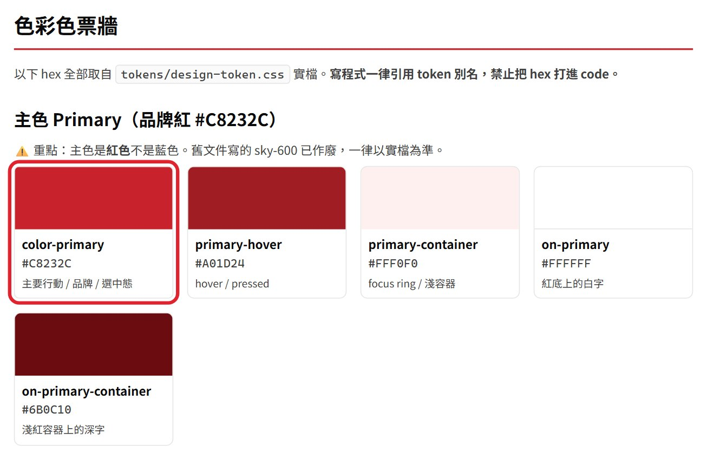
- 網頁打不開：多半是
pnpm dev那個終端機被關了。回sample-app資料夾，重跑pnpm dev。 - pnpm 噴一大串紅字：從你打的指令那一行開始整段複製，貼給 AI：
同一個錯誤 AI 修兩次還不行，舉手找講師（講師有離線安裝包）。範本專案的 pnpm 指令失敗了，完整輸出在下面，我用 Windows 11。 請說明原因，給我可複製的修復指令；不要改專案的程式碼。 （從你輸入指令那一行開始整段貼上）
想查才翻：2.1_sample_app/ 裡的 SPEC（需求規格）、DESIGN（設計文件）、DIAGRAMS.html（8 張中文圖，用瀏覽器開）是「回公司要交的文件長什麼樣」的樣板，不是這一節的功課。
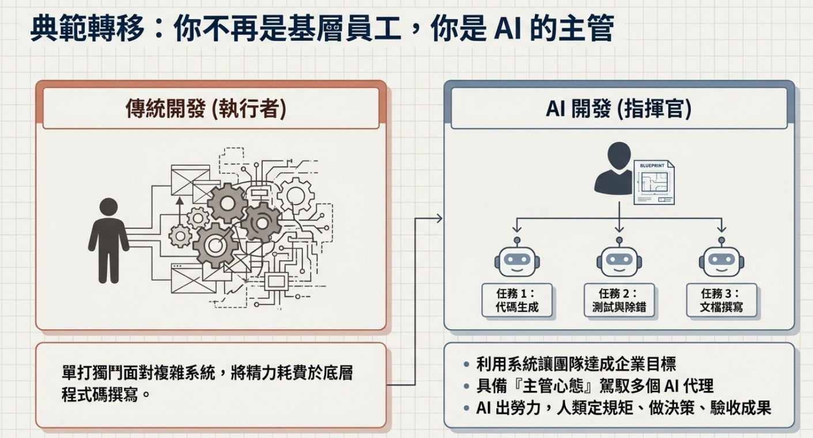
- 只給 AI 一份白話 PRD，它自己找出沒寫清楚的地方，用選擇題問你，你拍板。
- 它先交文件和五張中文圖，你看過才說「開工」。
- 打開網頁驗收；有小落差，附畫面講。
順序一句話：白話 PRD → AI 找缺口出題 → 你拍板 → AI 交文件和圖 → 你核過 → 說「開工」→ AI 寫程式 → 你驗收。這就是 SDD：先文件、再程式。
⓪ 用檔案總管複製範本 ▶ 看動畫
- VS Code 左邊，對
step2_speedrun_kit/2.1_sample_app/sample-app按右鍵，選「在檔案總管中顯示」。
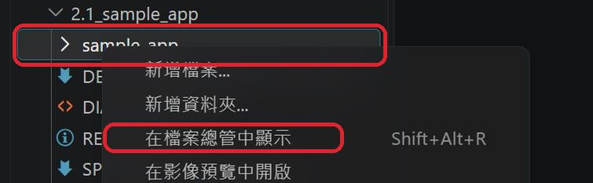
- Windows 檔案總管打開了，
sample-app已經選好。按兩下進去，按 Ctrl+A 全選。 - 按住 Ctrl，點一下
node_modules、.nuxt（有.output也點），取消選取。這些是自動產生的，帶過去又慢又容易出錯。
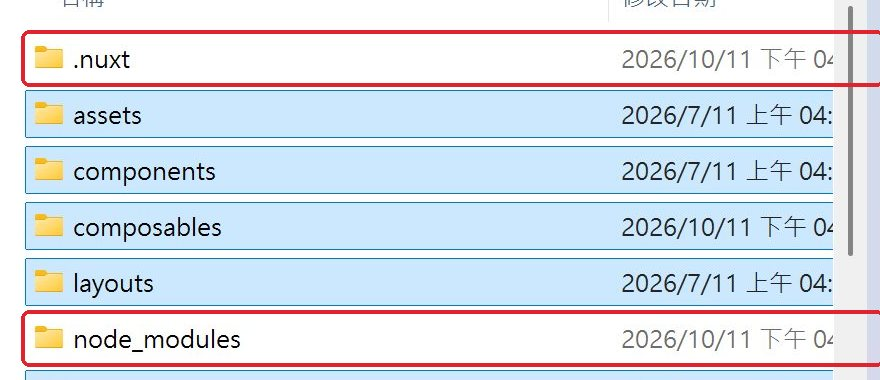
- 按 Ctrl+C 複製。
- 按左上角的向上箭頭「↑」三次，回到教材資料夾，點進
step3_new_module。 - 按 Ctrl+Shift+N 新增資料夾，名字打
my-equipment-app。點進去，按 Ctrl+V 貼上。 - 回到
step3_new_module，按住 Ctrl 選三份文件：PRD-中心裝備物資.md、技術約定-中心裝備物資.md、SRS-設計文件-最小樣板.md。Ctrl+C，進my-equipment-app，Ctrl+V。
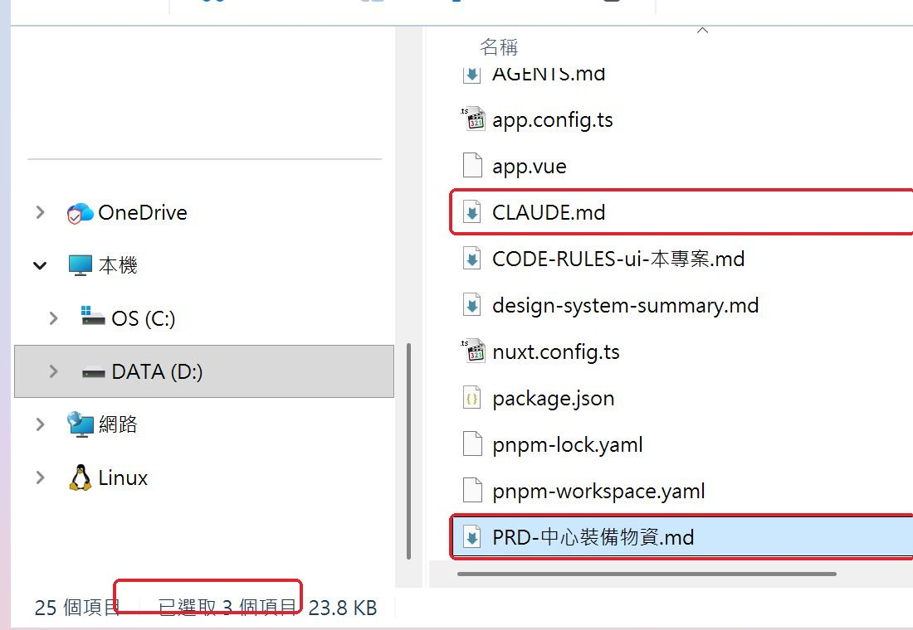
my-equipment-app 裡有規矩（例如 CLAUDE.md）和 PRD；往下捲還有技術約定、最小樣板。左下角寫「已選取 3 個項目」，就是三份都貼進來了。會用終端機的：改貼指令，效果一樣
在教材根目錄的終端機整段貼上；出現 >> 再按一次 Enter：
$src = "step2_speedrun_kit\2.1_sample_app\sample-app"
$dst = "step3_new_module\my-equipment-app"
robocopy $src $dst /E /XD node_modules .nuxt .output | Out-Null
Copy-Item step3_new_module\PRD-中心裝備物資.md $dst\
Copy-Item step3_new_module\技術約定-中心裝備物資.md $dst\
Copy-Item step3_new_module\SRS-設計文件-最小樣板.md $dst\
cd $dst
pnpm installmacOS：
rsync -a --exclude node_modules --exclude .nuxt --exclude .output step2_speedrun_kit/2.1_sample_app/sample-app/ step3_new_module/my-equipment-app/
cp step3_new_module/PRD-中心裝備物資.md step3_new_module/技術約定-中心裝備物資.md step3_new_module/SRS-設計文件-最小樣板.md step3_new_module/my-equipment-app/
cd step3_new_module/my-equipment-app
pnpm install① 打開新專案、裝套件 ▶ 看動畫
- VS Code 選單「檔案」→「開啟資料夾」，選
step3_new_module\my-equipment-app。視窗會整個重開，這是正常的。 - 開一個終端機，打
pnpm install，看到 Done 就好。
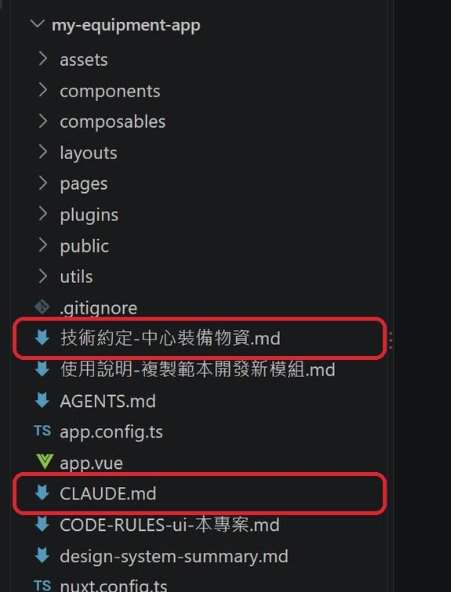
② 讀白話 PRD ▶ 看動畫
打開 PRD-中心裝備物資.md，按 Ctrl+Shift+V 看預覽。這份是中心的裝備管理員用自己的話寫的：沒有英文欄位名，也沒有選擇題。
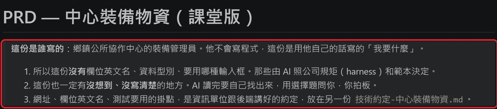
旁邊的 技術約定-中心裝備物資.md 是資訊單位寫給 AI 的（網址、欄位英文名），你不用讀。
③ 打開 Claude Code、選模型 ▶ 看動畫
- 點 VS Code 右下角的「Claude Code」，打開對話。右下角沒有它，代表還沒裝好或還沒登入，舉手找講師。
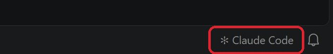
- 點輸入框下面的模型名稱，選 Opus 5.5；同一個選單裡的 Effort 拉到 High（effort＝AI 想多深）。寫文件要想得深。
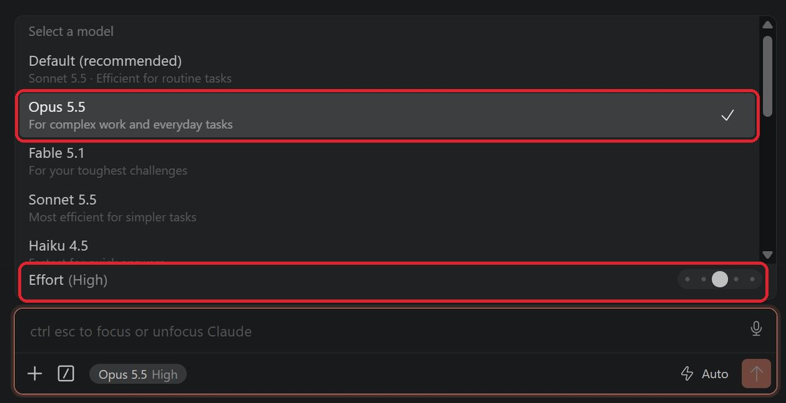
- 輸入框右下角的核准模式切成 Auto。不然它每跑一個指令都會停下來問你。公司電腦照公司規定。
④ 貼起手 prompt ▶ 看動畫
這段貼在 Claude Code 的對話輸入框，按送出：
用 CRUD 範本做新模組「中心裝備物資」，走規格驅動開發（SDD）：先文件，再程式。
先讀 CLAUDE.md、CODE-RULES-ui-本專案.md、使用說明-複製範本開發新模組.md、PRD-中心裝備物資.md、技術約定-中心裝備物資.md，先不要寫程式。
PRD 沒寫清楚的地方，照 SRS-設計文件-最小樣板.md 的釐清規矩，用選擇題逐題問我，每題標出建議和一句理由。
我拍板後，照同一份樣板產出 SRS、設計文件、UML 圖和任務清單；等我說「開工」才寫程式，每做完一個回報一行。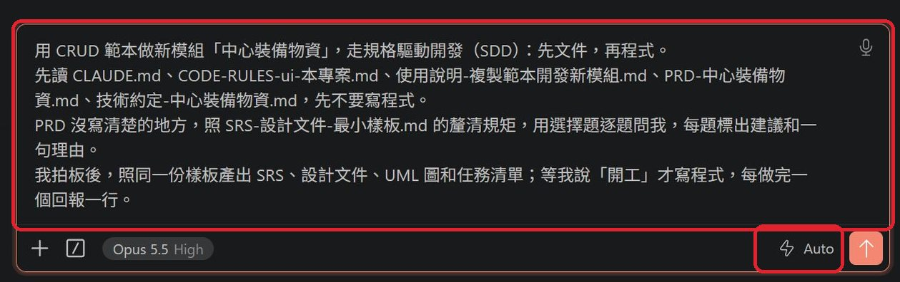
← 手機可左右滑看整張圖 →
⑤ AI 找缺口出題，你拍板 ▶ 看動畫
大約一分鐘，它就出選擇題。每題都是白話，有標「建議」的選項和一句理由。
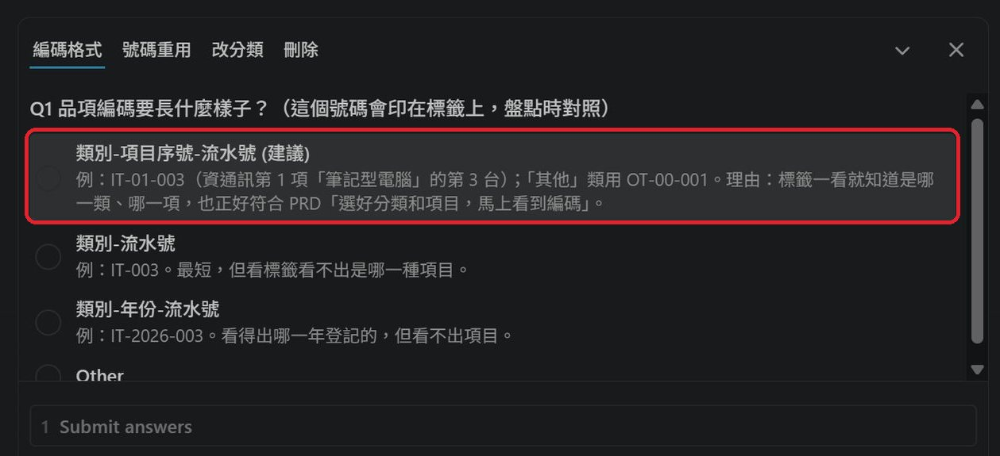
← 手機可左右滑看整張圖 →
- 建議不是你要的，就選 Other，自己打。例如編碼它建議
IT-01-003，我們要PW-GEN-001：選 Other，打「類別代號－項目英文三碼－流水號三碼，例：PW-GEN-001」。
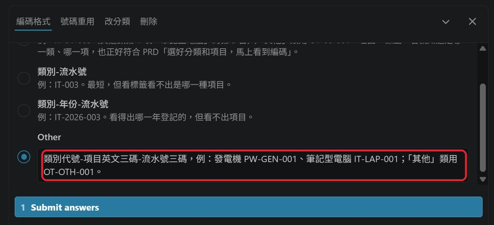
← 手機可左右滑看整張圖 →
- 其他題照下表選；表上沒有的，選它標「建議」的。
- 一批答完，按 Submit answers（送出答案），它會再出下一批。
| AI 可能這樣問 | 課堂拍板 |
|---|---|
| 品項編碼怎麼編？ | 類別代號－項目三碼－流水號，例 PW-GEN-001（選 Other 自己打） |
| 打錯了要不要能刪掉？ | 要，刪之前跳確認框 |
| 交給縣府的清冊用什麼格式？ | CSV（Excel 打得開），匯出篩選後的全部 |
| 保管人電話：一欄，還是拆成手機、市話兩欄？ | 一欄，手機和市話都收 |
| 新增時，狀態要不要先帶「正常」？ | 要，預設「正常」（分類、項目還是空白） |
| 採購日期可以填未來的日期嗎？ | 不行，最晚到今天 |
| 狀態能怎麼變？「已報廢」還能改回來嗎？ | 正常、維修中可以互換；已報廢就回不去（登記錯了刪掉重新新增） |
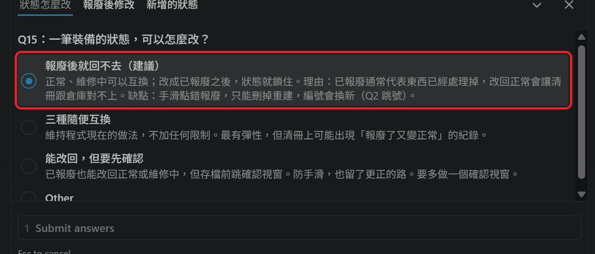
← 手機可左右滑看整張圖 →
題目的字句、題數每次都不一樣，照意思對到表就好。表上有、它卻沒問的，你自己補問一句。
停，先不要寫程式、不要建檔案。
先把 PRD 沒寫清楚的地方用選擇題逐題問我，我拍板後再產出文件和任務清單，等我說「開工」。⑥ 先看文件和圖，再說開工 ▶ 看動畫
拍板後，它交四個檔：SRS、設計文件、圖、任務清單。到這裡，程式一行都還沒寫。照這個順序核：
- SRS（按 Ctrl+Shift+V 看預覽）：第 1 段每題一列，問題、你選了什麼、理由。第 2 段 PRD 每一項做在哪；第 3 段這一版不做什麼。這三段你一定要核。
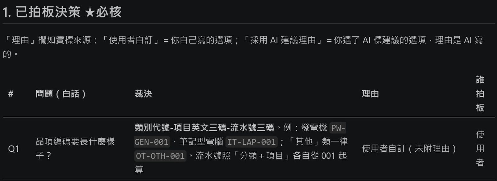
← 手機可左右滑看整張圖 →
- 設計文件：第 1 段哪 5 個檔照範本複製改名、哪 3 個直接共用；2.3 寫了只有狀態帶預設值。
- 五張圖：圖要用瀏覽器開。在
my-equipment-app的終端機打start DIAGRAMS-中心裝備物資.html。每張圖上面寫「怎麼看」，下面有一題「看完你要答得出來」：- 使用案例圖：管理人員能做哪 8 件事？
- 零件圖：橘色照範本複製、綠色直接共用。
- 資料圖：一筆裝備記哪 12 項資料、哪些一定要填？
- 流程圖：新增一筆裝備，檢查沒過會怎樣？
- 狀態圖：一筆裝備的狀態怎麼變？
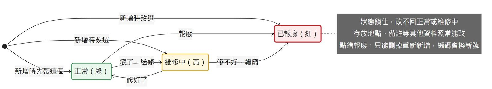
← 手機可左右滑看整張圖 →
文件的最低門檻寫在 SRS-設計文件-最小樣板.md：SRS 四段、設計文件四段、圖五張，缺一樣就退回。想看填好的樣子，step3_new_module/docs/ 有參考文件、solution-app/ 有參考程式——先自己做，卡兩次再開。
看圖抓到落差，就一句話叫它改。實拍那次，第 1 張的說明寫「能做 7 件事」，圖上數到 8 件，一句話它就改好了。看不懂的圖，一樣叫它重畫。
- 看任務清單：打開
TASKS.md，每一項都小到能單獨驗收；你拍板的每一題，都對得到一項任務。 - 換模型、說開工：它還有題目在問，先答完。把模型換成 Sonnet 5.5（有規矩和範本，寫程式用便宜的就夠），在輸入框打「開工」送出。實拍這次大約 8 分鐘做完。
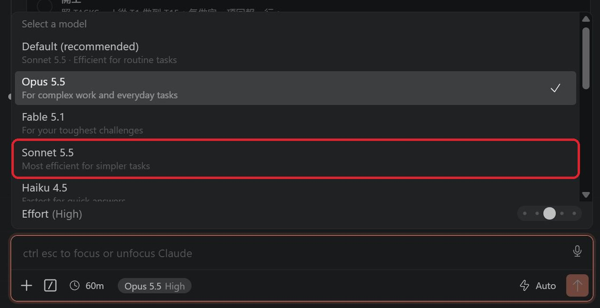
⑦ 打開網頁驗收 ▶ 看動畫
做完它會停下來問下一步，選「我自己開網頁驗收」。在 my-equipment-app 的終端機打：
pnpm dev --port 3101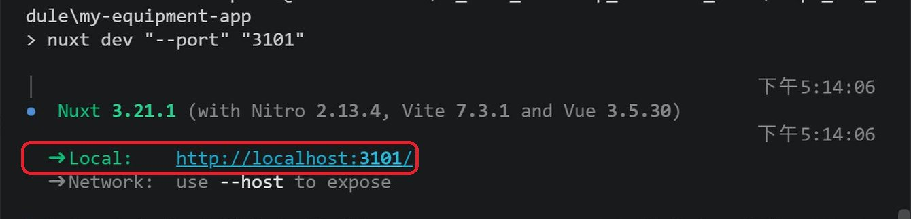
/equipment/crud，例如 http://localhost:3101/equipment/crud。這個終端機不要關。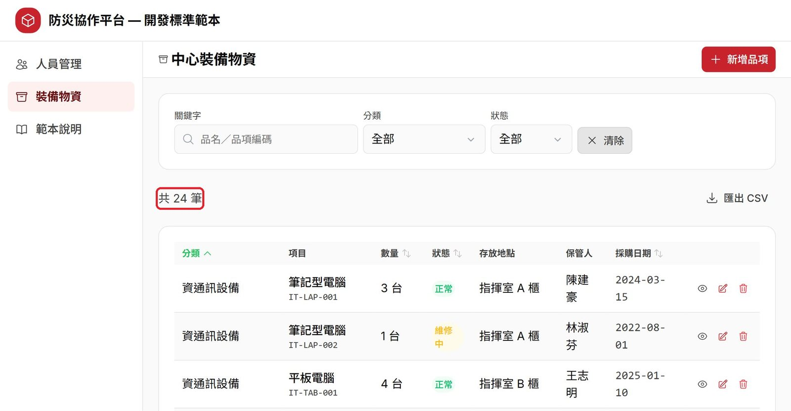
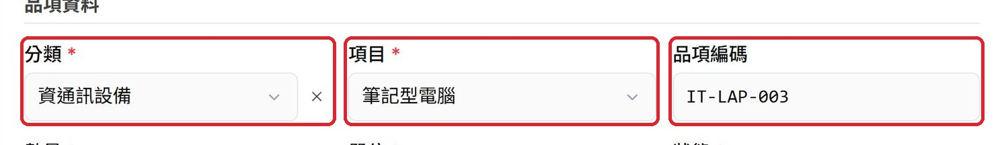
← 手機可左右滑看整張圖 →
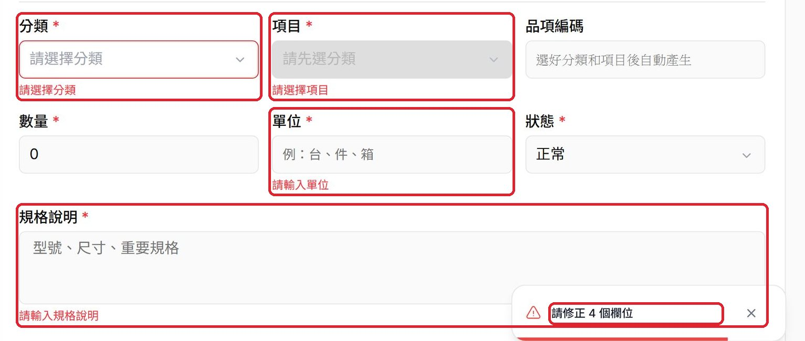
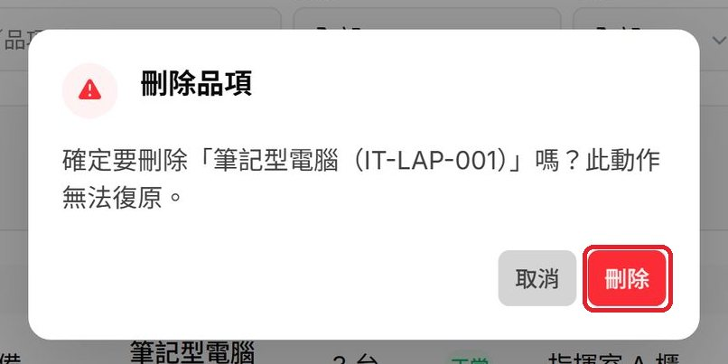
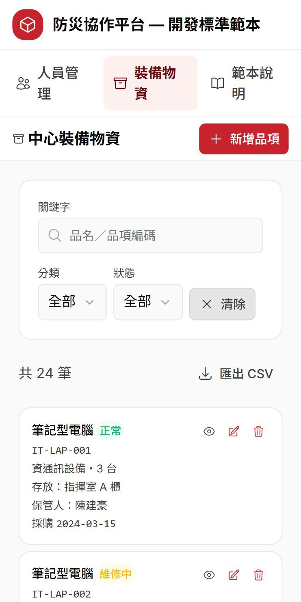
| 驗收點 | 看到這樣就對了 |
|---|---|
| 清冊 | 每頁 20 筆、照「分類→項目」排、顯示總筆數 |
| 連動下拉 | 先選分類，項目才能選，只出現那一類的項目 |
| 新增 | 選好分類和項目，編碼馬上出現；沒填的按儲存跳紅字 |
| 刪除 | 先跳確認框，按「刪除」才刪 |
| 匯出 CSV | 匯出全部（不是只有這一頁），用 Excel 開中文不亂碼 |
| 保管人電話 | 0912345678、089-123456 都收；亂打 123 會擋 |
| 新增時的下拉 | 分類、項目空白；狀態先帶「正常」（你拍板的） |
| 已報廢的裝備 | 編輯一筆已報廢的，狀態改不了（你拍板的） |
最後拿 PRD 第 3 節的 12 項資料，一項一項對：名稱、要不要填、怎麼輸入、打錯會不會擋。
⑧ 有小落差：附畫面講 ▶ 看動畫
驗收一定會有小落差。實拍那次，清冊太擠：名字、日期、維修中都斷成兩行。
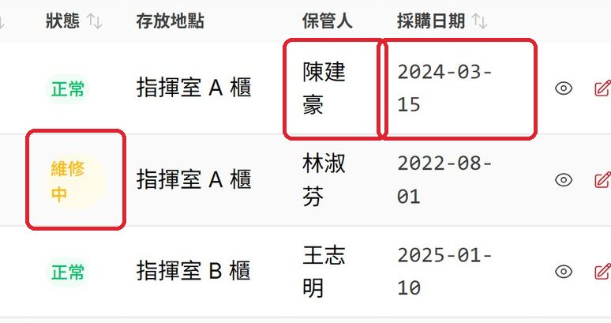
- 按 Win+Shift+S，框起有問題的地方（macOS：Shift+Cmd+Ctrl+4）。
- 到 Claude Code 輸入框按 Ctrl+V，圖就貼上去了（macOS：Cmd+V）。
- 再打一句：看到什麼、期望什麼。一次只講一件。
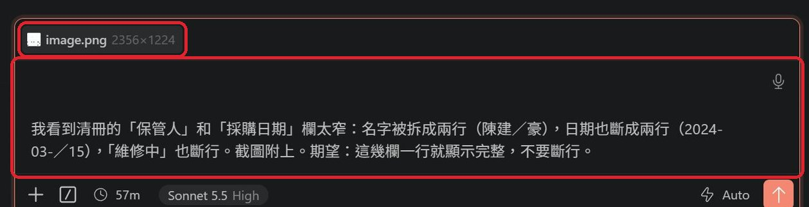
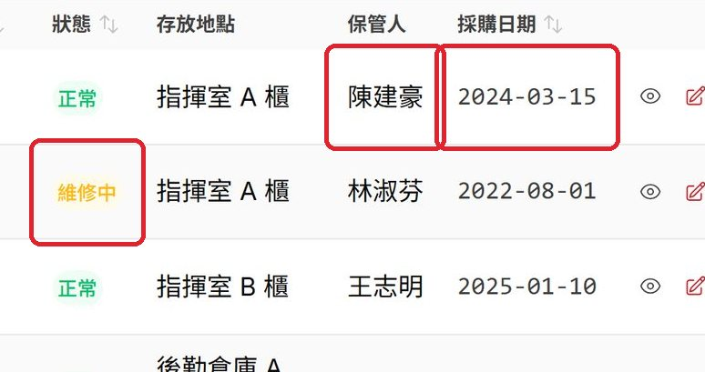
全部沒問題，打「驗收通過」送出。同一件事講兩次還改不好，換個說法重講，不要一直盧。
- 一開頁就 500，寫著
useColorMode is not defined：舊的快取被複製過來了。跟 Claude Code 說「請停掉網頁伺服器、刪掉 my-equipment-app 的 .nuxt 和 .output 再重開」。只刪你的工作專案，不要刪範本的。 - 別的錯誤：把整段錯誤訊息貼給它，讓它判斷原因。
對照：AI 應該怎麼處理範本的 8 個核心檔
複製改名（5 個）：列表頁 index.vue、明細頁 [id].vue、資料 useEquipmentItems.ts、欄位外框 EquipmentFormField.vue、狀態標籤 EquipmentStatusBadge.vue。
直接共用、不動（3 個）：useTemplateListPage.ts、templateValidation.ts、templateCsv.ts。
設計文件第 1 段和第 2 張零件圖，應該跟這個一樣。
- 貼一個 prompt，AI 把你的
my-equipment-app修到 7 條自動測試全部通過，再叫分身挑錯。 - 看懂它交的報告：修改前後的圖、要你裁決的題目。
- 記住兩條鐵律：同一問題修兩次沒好就停；不准改測試。
LOOP 一句話：先給 AI 一套會亮紅綠燈的驗收標準，再叫它自己修到全綠。這堂課的驗收標準是 7 條自動測試（E2E）：程式自己開瀏覽器，照使用者的順序點一遍，再判定對不對。教材已經寫好，你不用寫。
- AI 改程式 → 跑 7 條測試。
- 有紅燈：自己找原因、修好、再跑。
- 全綠：叫出一個子代理（AI 的分身）挑錯。App 的問題修掉；測試本身的問題列出來給你。
- 交報告給你驗收。同一個問題修兩次還沒好，就停下來回報。
① 回到教材根目錄、開新對話 ▶ 看動畫
- 選單「檔案」→「開啟資料夾」，選回教材最外層的
AI_CRUD_Workshop_Frontend_EASY。左邊要同時看得到step3_new_module、step4_loop_e2e。 - 打開 Claude Code，按右上角的加號開新對話。
- 模型選 Sonnet 5.5，核准模式一樣是 Auto。
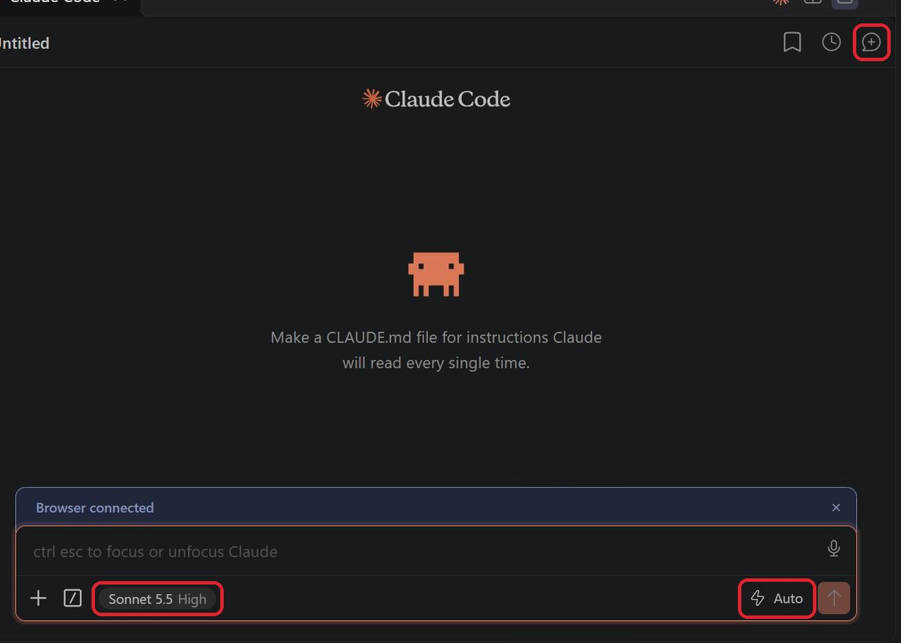
② 貼 LOOP prompt ▶ 看動畫
你是 LOOP 工程師，照 step4_loop_e2e/LOOP-規矩.md 做，自己跑完，中途不要問我。
受測 App：step3_new_module/my-equipment-app。先在背景啟動它（3100 被占就自己換一個空的埠），跑 step4_loop_e2e 的 run-e2e，修到 7 條全綠。
全綠後開一個子代理做對抗審查：用 Playwright 開瀏覽器逐頁截圖，對照 PRD、技術約定、SRS 和 design system 挑 App 的問題，也挑測試的假綠。
最後照規矩交 LOOP-LOG.md、LOOP-REPORT.html、測試報告，並更新 SRS、設計文件和圖。- 「中途不要問我」：它會一路跑完，不會中途停下來問。需要你決定的事（例如要不要動全站共用的檔、測試本身有沒有問題），它寫進報告，跑完後在對話裡用選擇題問你。
- 鐵律、埠被占怎麼辦、要交哪些檔，都寫在
step4_loop_e2e/LOOP-規矩.md，AI 會自己讀。 - 送出後大約半小時。電腦不要讓它睡眠。跳出要不要開 Chrome，選 No，打「不用開瀏覽器，繼續」。
③ 它自己起服務、自己跑測試 ▶ 看動畫
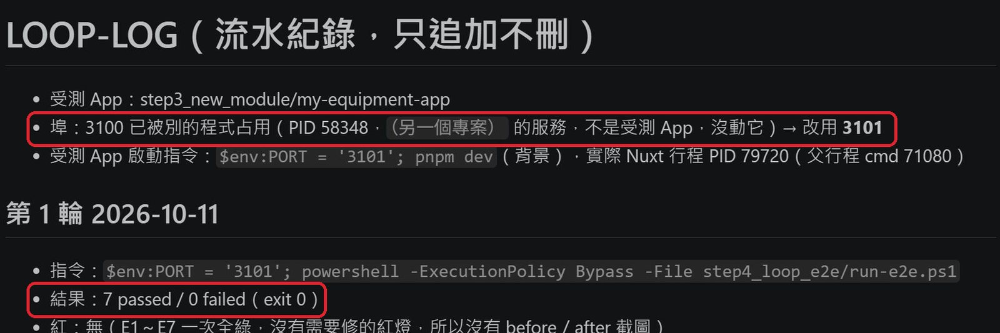
← 手機可左右滑看整張圖 →
第一輪可能全綠，也可能有紅燈，兩種都正常。有紅燈，它會先找原因（App 不符規格？環境？測試本身？），再修、再跑。你不用插手。
④ 全綠之後：子代理挑錯 ▶ 看動畫
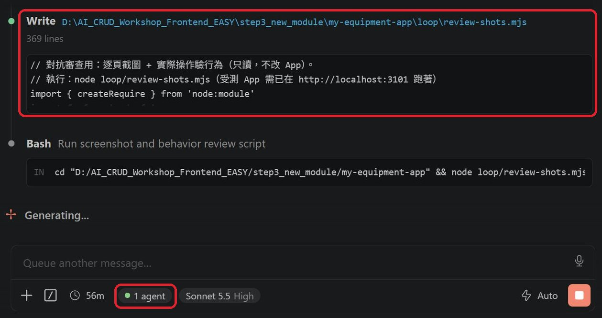
子代理用比寫程式高一級的 Opus 5.5：寫程式的 AI 審自己，就像自己改自己的考卷。規矩檔寫好了，你不用自己切。
⑤ 修好的：看修改前、修改後 ▶ 看動畫
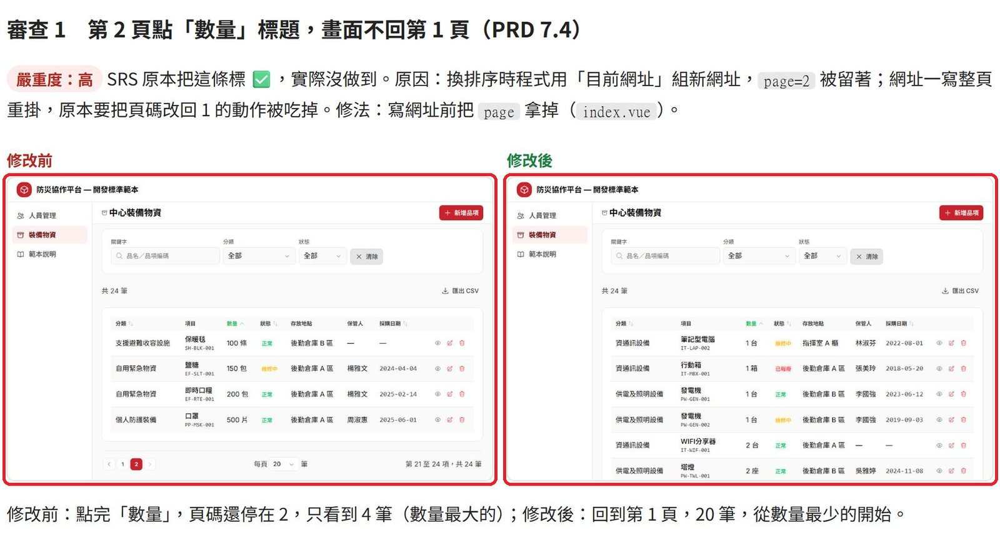
⑥ 要你裁決的：先看畫面再回答 ▶ 看動畫
要動到全站共用的檔，它不自己決定：跑完後出選擇題問你。選擇題框裡放不了圖，所以先打開報告的「要你裁決的事」，每一題都附了當下的畫面。在教材根目錄的終端機貼：
start step3_new_module\my-equipment-app\loop\LOOP-REPORT.html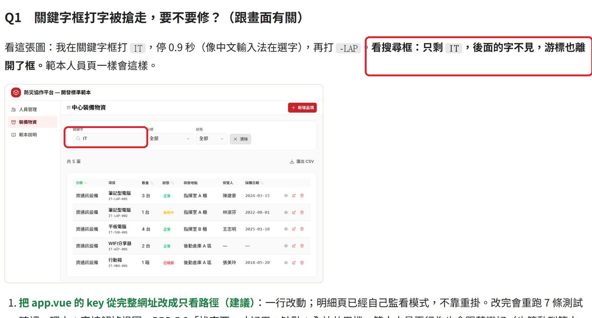
← 手機可左右滑看整張圖 →
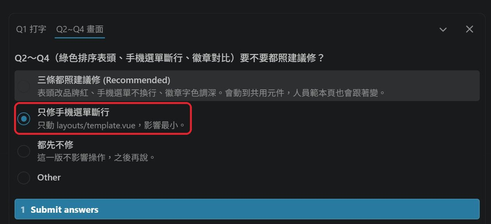
你答完，它照做；修好的一樣附修改前後圖，再跑一輪。你說先不修的，記在報告裡，它不會偷偷改。
| 你看到的 | 這是什麼 | 你要做的 |
|---|---|---|
| E1～E7 有幾條紅 | 正常，這就是 LOOP 的用途 | 別插手，讓它自己修 |
| 跑完後出選擇題（要動共用檔、規格衝突） | 正常，規矩要它問你 | 先看報告附的畫面，再回答 |
| 它說同一個問題修兩次還沒好，停下來 | 鐵律，代表該你介入 | 看它說的原因：該修 App 就叫它修；說「測試有問題」的，找講師 |
| 腳本根本沒開始跑就掛了（瀏覽器下載失敗、連不上 App） | 環境問題 | 開新對話，貼下面這段 |
只有最後一種（腳本沒跑起來）才貼這段：
step4 的 E2E 腳本還沒跑測試就失敗了，完整輸出在下面，我用 Windows 11。
請說明原因，給我可複製的修復指令；不准改 step4_loop_e2e/e2e 的測試檔。
（從你輸入指令那一行開始整段貼上）⑦ 驗收：報告、測試報告、紀錄、文件 ▶ 看動畫
東西放在兩個地方：
- 你的作品
my-equipment-app/loop/：結果報告LOOP-REPORT.html、流水紀錄LOOP-LOG.md、截圖。 step4_loop_e2e/e2e/playwright-report/：測試報告。
在教材根目錄的終端機，一行貼一次：
start step3_new_module\my-equipment-app\loop\LOOP-REPORT.html
start step4_loop_e2e\e2e\playwright-report\index.html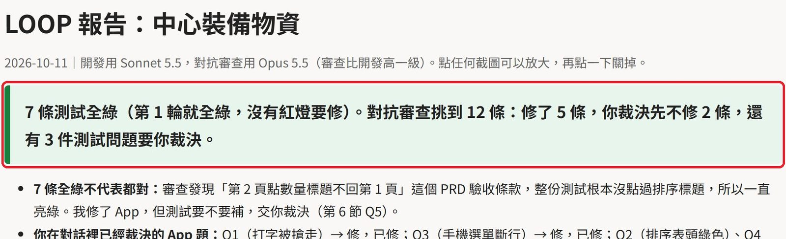
← 手機可左右滑看整張圖 →
| 核什麼 | 看到這樣就對了 |
|---|---|
| 結果報告 | 結論在最前面；修好的每一條有修改前、修改後兩張圖 |
| 要你裁決的 | 每題附當下的畫面；寫著「講測試」的題目，找講師（補測試要重算基準） |
| 測試報告 | 7 條綠（或停在紅燈、報告寫清楚停在哪一條、為什麼） |
| 流水紀錄 | LOOP-LOG.md 一輪一段，你的裁決也記在裡面 |
| 文件同步 | SRS、設計文件、圖有標「step4 LOOP 後」 |
| 自己點一遍 | 照報告上的網址，點列表、新增、編輯、刪除。燈綠了，還是要你親眼驗 |
7 條自動測試各驗什麼
| 編號 | 驗什麼 |
|---|---|
| E1 | 清冊打得開、24 筆、第一頁 20 筆 |
| E2 | 用編碼或品名找得到，大小寫都行；清除後回到原本筆數 |
| E3 | 新增：選分類→項目→編碼馬上出現→儲存→多 1 筆 |
| E4 | 空表單儲存：必填各自跳紅字、頁面不跳走 |
| E5 | 刪除：取消不變、確認少 1 筆 |
| E6 | 範本人員頁沒被改壞 |
| E7 | 編輯數量和存放地點，儲存後新值生效 |
備案：想再找別家 AI（例如 Codex）審一次
你的工具不能開子代理，或想要第二意見，開另一個 AI 貼這段：
請盡力挑 step4_loop_e2e/e2e 這套 E2E 測試，和 step3_new_module/my-equipment-app 的毛病，不要誇獎。
測試專找：假綠（斷言太鬆、選錯元素）、一改版就壞的 selector（例如靠 nth）、測試互相影響。
App 專找：用 Playwright 真的開瀏覽器逐頁截圖（含手機寬度），對照 PRD-中心裝備物資.md、技術約定-中心裝備物資.md、SRS-中心裝備物資.md 和 design-system-summary.md，挑測試沒抓到的問題。
每條附理由，能重現就附步驟和截圖；只回報，不改檔；找不到也說明你怎麼確認的。下一個新模組，只有一條路：
- 用白話寫一頁 PRD，像寫給同事的需求；資訊單位補一頁技術約定。
- 貼起手 prompt：AI 找缺口出選擇題，你拍板。
- 它交文件和圖，你看過才說「開工」。
- 新模組也要先備好自動測試，再貼 LOOP prompt：AI 自己測、自己修、分身挑錯。
- 看報告、自己點一遍。
回公司三步：
- 帶走四份規矩：
CLAUDE.md、CODE-RULES-ui-本專案.md、design-system-summary.md、使用說明-複製範本開發新模組.md複製到你的專案，改成你們公司的規則（顏色、命名、檢查、禁止事項）。 - 整理範本：挑一個最成熟的頁面，分成「複製改名」和「直接共用」兩區。
- 新需求都走同一條路：白話 PRD → 選擇題拍板 → 文件和圖 → 開工 → LOOP → 驗收。程式改了，文件跟著改。
課後作業：一個人做一個課程回饋問卷，做到能給別人填。題目在 step6_survey/README.md。
完課檢核表
全部打勾，代表你真的走完了：
- Step 0 前置檢查最後寫「可以開課」
- Step 1 點過兩個網頁，說得出差在「這個決定是誰做的」；找得到「下拉不准預設帶第一個」寫在哪
- Step 2 範本跑起來（網址是終端機印出來的那個），新增、編輯、刪除、篩選、匯出都點過；新增時下拉是空白「請選擇」
- Step 3 AI 先找缺口、出選擇題，你拍板；看過 SRS、設計文件和五張圖，才說「開工」
- Step 3 網頁驗收：清冊、連動下拉、新增編碼、刪除確認、手機卡片都有；小落差附畫面講
- Step 4 貼一個 LOOP prompt，7 條全綠（或停在紅燈、報告寫清楚原因），子代理挑過錯
- Step 4 看過報告：修改前後的圖、裁決題附的畫面；測試報告、流水紀錄都在；文件標了「step4 LOOP 後」；自己點過一遍
- Step 4 說得出兩條鐵律：同一問題修兩次沒好就停；不准改測試、不准放寬標準